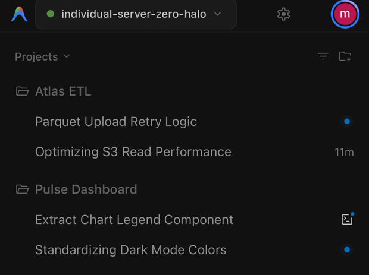
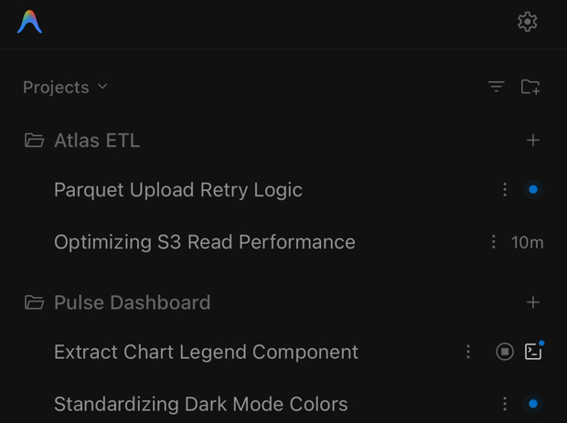

Antigravity's web UI,
fixed for thumbs.
Google's official remote already puts your agent on your phone — as the desktop web bundle, untouched. This stands in front of the same Antigravity core as a second, direct front door and rewrites that bundle on the way out, behind your own password.
Running in 30 seconds
No configuration, no accounts, no build step. Antigravity doesn't even have to be open — it gets started for you.
# macOS / Linux curl -fsSL https://raw.githubusercontent.com/AFSlayer/antigravity-server/main/scripts/install-desktop.sh | bash # Windows (PowerShell) irm https://raw.githubusercontent.com/AFSlayer/antigravity-server/main/scripts/install-desktop.ps1 | iex
Paste one line
Installs and starts. No security warnings, nothing to click through.
Scan the QR
Your phone is signed in. Single-use code, nothing typed.
Add to Home Screen
The Antigravity icon on your home screen, one tap away.
Or host it: your own cloud Antigravity
One command on any Linux box turns it into an always-on coding agent you reach from anywhere: a $5 VPS, a home server, a free-tier ARM instance.
It is the same web UI, so a desktop browser works too and behaves like the app. Conversations, workspaces and running agents live on the server, so you can start something on your phone and pick it up at a desk. Nothing syncs, because there is only one instance.
# downloads the official Antigravity build from Google, sets up
# systemd and automatic HTTPS with Caddy
curl -fsSL https://raw.githubusercontent.com/AFSlayer/antigravity-server/main/scripts/install.sh | bash
Next to the official remote
Google's bridge at antigravity.google.com reaches every
machine of yours that runs Antigravity with remote access on — a
headless Linux server included. The two are not exclusive: this enables
the same setting the official bridge uses, so one machine serves both.
What differs is what arrives at your phone, and how it gets there.


agy-server.
| Official remote | Antigravity Server | |
|---|---|---|
| Mobile web UI | The desktop bundle as-is | 25 runtime patches for touch |
| Conversations | No delete, pin, or archive on mobile | Delete, rename, pin, archive |
| Uploads | 1 MB RPC limit | Chunked streaming, any size |
| Connection | Relayed through Google | Direct, your own domain |
| Access | Whoever holds the Google account | Your password, sessions, rate limits |
Built for thumbs
A desktop IDE in a phone browser has sharp edges. Twenty-five named patches fix them, and every patch the proxy applies is listed in the control panel.
- Enter inserts a newline; Cmd/Ctrl+Enter sends
- Tapping a model opens its reasoning-effort submenu
- Safe Area insets & virtual keyboard viewport height sync
- No notification prompt, no tap delay, no dead mic button
- Add to Home Screen puts the official icon on your home screen


Treated like shell access
Anyone who reaches Antigravity can read files and run commands. The defaults reflect that.
- PBKDF2-SHA256 password hashing, never stored in plain text
- Session tokens stored only as hashes, revocable from any device
- Per-IP and global login rate limiting with exponential lockout
- The control panel lives on a loopback-only port, never exposed
- Automatic HTTPS when you give it a domain